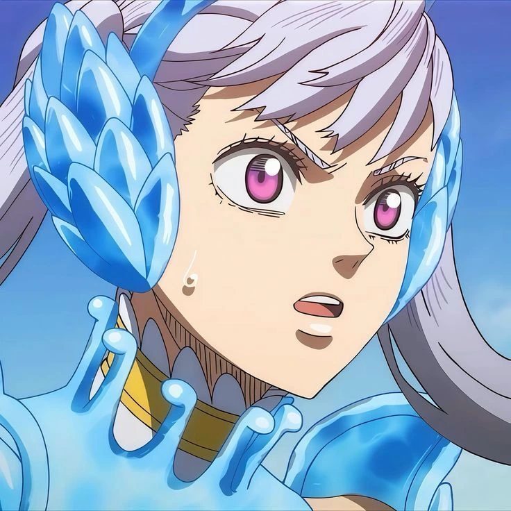
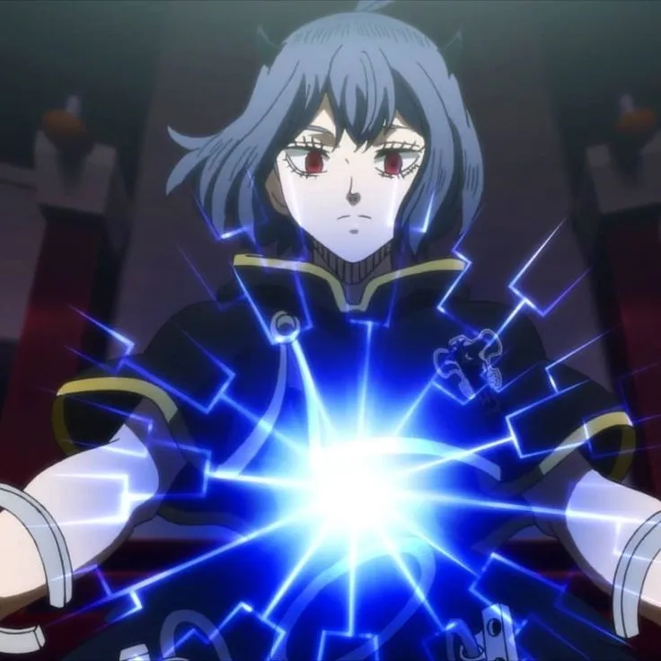

Yami Sukehiro is the battle-hardened and often unpredictable captain of the Black Bulls. Originally from the distant land of Hino Country, he became one of the Clover Kingdom's strongest Magic Knights, known for his Dark Magic and philosophy of "surpassing limits".
Black Bulls Squad

Asta

Noelle Silva
Magna Swing
Luck Voltia
Charmy Pappitson

Vanessa Enoteca

Gauche Adlai

Grey

Henry Legolant

Gordon Agrippa

Zora Ideale

Nacht Faust

Secre Swallowtail
Yami's Homeland: Hino Country
Hino Country is a distant land in the Black Clover world, inspired by traditional Japanese culture.
It is known for its warrior clans and samurai-like magic users. Yami originally came from this country before
he was stranded in the Clover Kingdom and began his journey as a Magic Knight.